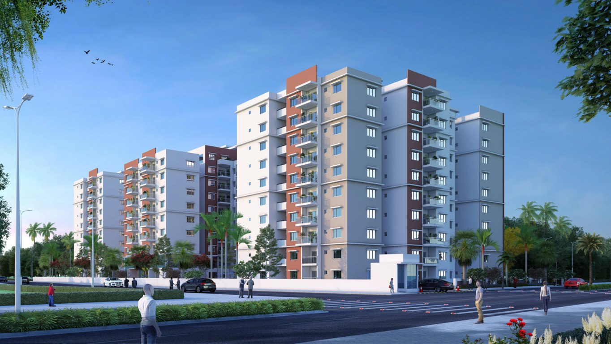

|

|
FEATURED LISTING
This wonderful 3 story Modern Contemporary was built with a flexible floor plan with plenty of room (5 bedrooms/4 baths).
Home is surrounded by a fence and gate, front yard is set up for hosting with fire pit and front entry courtyard space. The spacious backyard includes a large deck with seating. Great lines
throughout the home with 20 ft high ceiling in the living room. Master suite has extra large porch with a view of downtown. The kitchen is outfitted with a dual oven and 8 burner stove top.
The lower level has the second living room, 2 bedrooms/1 bath along with the 863+/- sqft Basement bonus room perfect for a home gym, theater room or wine cellar. Oversized 2 car garage. Come see this
amazing property located in Central Austin near Lady Bird Lake and South Congress.
|